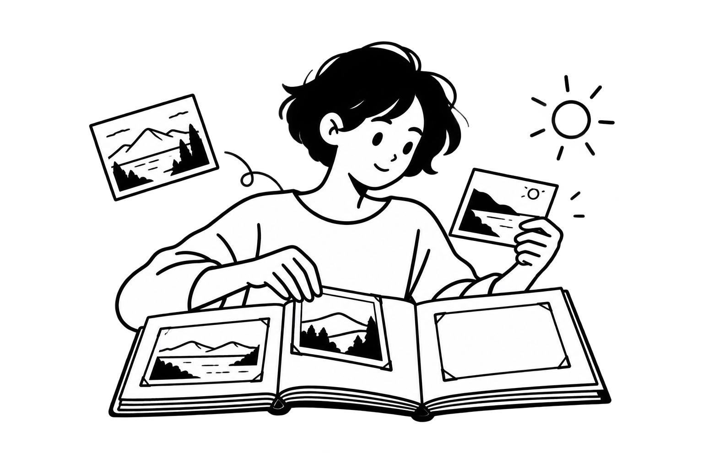

正在加载预览…
已忽略
选择一个网页开始
点击扩展图标，扫描当前页面
收集、筛选并保存页面中的图片。
优先读取页面资源·保留加载失败的图片
阈值自动保存，设为 0 取消限制。≈ 表示估算体积；尺寸或体积未知的图片仍会保留。
排除匹配元素及其子树中的图片，支持多个选择器（每行一条或逗号分隔）。按当前网站域名保存。
粘贴 DevTools → Copy XPath / Copy full XPath。仅提取主文档匹配节点及子树中的图片，再应用其他筛选；留空扫描全页。
打开一个网页，再点击右上角重新扫描。